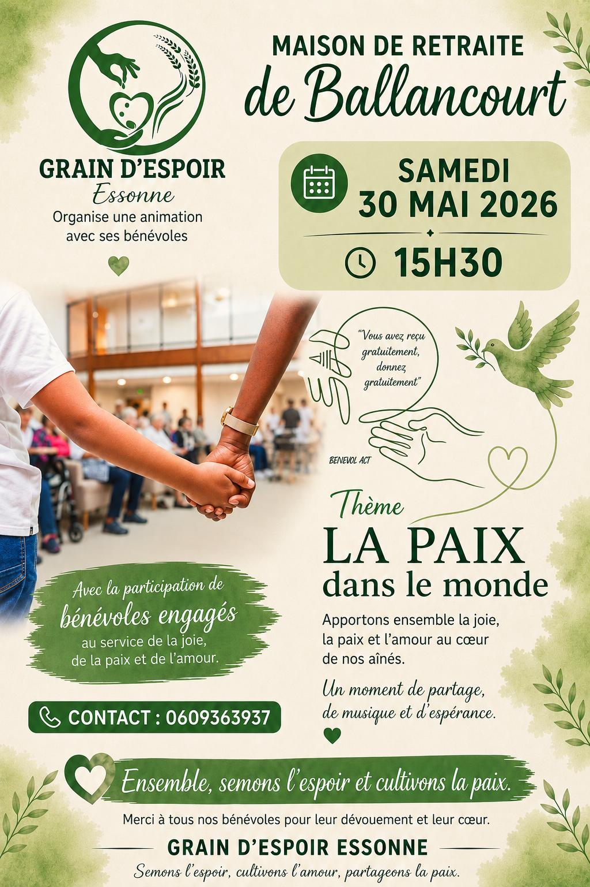

30 mai 2026 • 15h30
Animation à Ballancourt
Maison de retraite de Ballancourt. Thème : La paix dans le monde. Un moment de partage, de musique et d'espérance pour apporter ensemble la joie, la paix et l'amour au cœur de nos aînés.